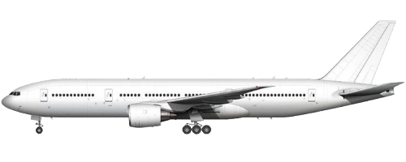

Boeing 777

777-200
777-300er
777-200LR
777-300
777-300ER
777-8
777-9
Game Stats
Other Information
The
Boeing 777
(commonly knows as the
Triple Seven
) is an American long-haul, wide body, twin engine airliner developed and manufactured by Boeing Commercial Airplanes. It's the largest twinjet in the world.
In-Game
At the current stage in the game, the 777-8 has the most planes in circulation in the family, followed by the 777-200.
Specs
Trivia
- Recently, Boeing 777-200s with Pratt and Whitney 4000 engines were recommended to have their operations suspended after the February 2021 incident with a United 777-200 (N772UA) losing its right engine.
- The 777-300ER and 777-9 were candidates for a replacement for Air Force One.